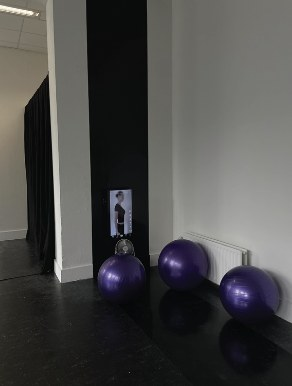
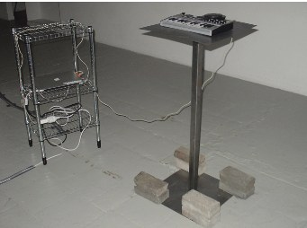
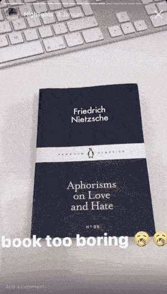

Born in Warsaw, Poland, in 2000. From 2022 to 2026 studied BA Interactive/Media/Design at the Royal Academy of Art, The Hague. In 2025 interned at The Hmm, Amsterdam, and since 2026 have been an intern at Gast Studio, Amsterdam.
Selected works: What Life Feels Like When You Have a Real Eater, 2026

Selected works: “Sock the Bushwick Enby” – podcast episode, 2025
Selected works: The Testament of the Flickering Scroll, 2025
Selected works: TikTok piano, 2024

Nietzsche for ppl with a short attention span <3, Instagram filter
